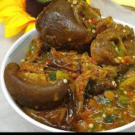

OKRA SOUP

DESCRIPTION
Okro soup is a very popular and delicious stew that is loved by the majority of the people, in West Africa, especially if cooked well.
Onions in okra soup have always been an issue that is really debated. It is believed that onions make the soup less viscous. This can be true if a lot of onion is added; however, if a little is added, as I did in this recipe, your okro soup will be nice, thick, and viscous. If you are not comfortable using it, you can skip it.
INGREDIENTS
- 5 cups (250g) Okra
- Beef: Best cut
- 3 cup palm oil
- Shaki (Cow Tripe) (Optional)
- Salt (to taste)
- Ground crayfish (to taste)
- 7- 8 cups stock
- Fish: Iced Fish (Mackerel/Titus), Dry Fish, Stock Fish
- Pepper and Salt (to taste)
- Onions (optional)(cut)
- Vegetable: Nigerian pumpkin leaves or spinach (fresh or frozen)
- 3 stock/boullion cubes
STEPS
- About two hours before preparing the soup, boil the stockfish for 20 minutes and leave in the pot with the hot water to soak.
There's a type of stockfish that I buy in Nigeria that does not need all that soaking.
- Cut the okra fingers into tiny pieces. The tinier you cut the okra, the more it will draw.
To achieve this, you need to make a few vertical cuts followed by horizontal cuts on the okra fingers.
- Grind the crayfish and the dry pepper.
- Wash the pumpkin leaves, if it is your choice of vegetable, and cut into tiny pieces.
If you will use frozen spinach, defrost and cut into tiny pieces.
- If you will use shaki (cow tripe) for the soup, wash and boil till it is done. Add water sparingly because this soup needs to be thick.
Add the soaked stockfish and dry fish to the cooked shaki. The length of time it will take to cook shaki depends on the cooking appliance utilized. You can take a bite to confirm this.
- When you are happy that the shaki and stock fish are well-done, add the beef, onions and stock cubes and cook till done. Then add the iced fish and cook till done.
- Pour red palm oil in another pot and heat the pot to dissolve the oil if it is congealed.
Add the diced okra and start frying to kick-start the drawing process, add some meat stock from time to time till you notice the okra start to draw. This process should take a maximum of 5 mins to avoid over-cooking the okra.
- Now add the vegetable and stir well. Add all the meat and fish, crayfish, pepper and salt to taste. Then stir well.
- Cover the cooking pot and leave to simmer and it is ready to be served.
- Add the bitter leaf. Leave the lid off while the cooking finishes for another 5-10 minutes.
- Stir, check seasoning and adjust accordingly
Shaki, Meat, Dry Fish, Iced Fish (Mackerel/Titus) and Stock Fish must not all be used at the same time in preparing the okra soup recipe. If you can, by all means use all as they will add to the flavour. But if not, an okra soup prepared with only iced fish ((Mackerel/Titus) can equally taste good. So don't go and break the bank because of a pot of soup!
Onions is optional because while some people cannot bear the smell/taste of onions in okra soup, others are like "Okra soup without onions? No Way!"